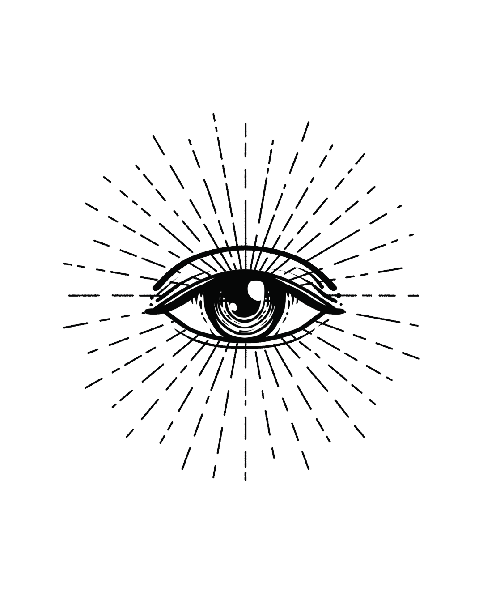

Seja bem vinde e revolucionárie, apesar de tudo!
Esse é um espaço para aquelas pessoas que desejam partilhar informações preciosas sobre as reais mudanças do mundo.
“As luzes foram apagadas mas eles não querem dormir. Assim se chamam os “Apesar de Tudo”. Apesar de todos os métodos usados para convencê-los que são impotentes, apesar de todos os esforços para que se deitassem, apesar de toda violência escondida atrás da falsa objetividade da mídia, os “Apesar de Tudo” tem um ouvido que ainda escuta. E um olho que permanecerá aberto”.